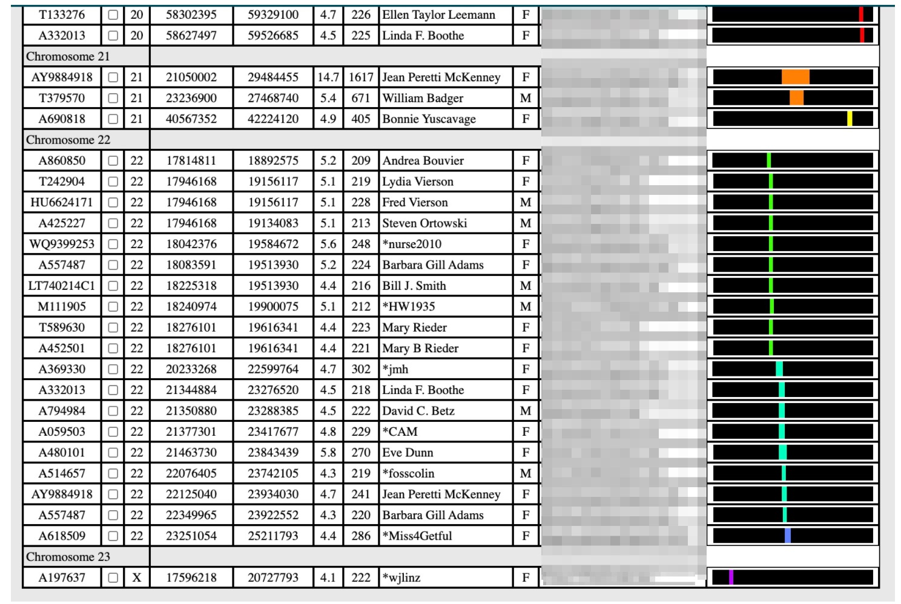

Ancestors Project on Gedmatch
An Introduction
THIS PAGE HAS BEEN ARCHIVED. THE METHOD HERE IS NOT RECOMMENDED
A Health Warning:
The most reliable way to use this project to find Mayflower ancestors is as a means to find others who have researched a document trail, and compare their trees with yours for commonalities, OR to find people through DNA matching with whom you share a common ancestor who descended from a passenger. This project cannot help you find a direct DNA link to someone from the 1600s. As much as I love the science of DNA tracing, the state of current tools and techniques means that your most reliable bet is going to be old fashioned birth, census, death, property, and church records. For an introduction to that more accepted method, please see this page instead.Mapping Small Segment Matches
So presuming you've got a Gedmatch kit, and you've signed up to the project, let's get started. The first step is to see what kits you match with.Go to the Ancestors Project Page. You'll see a list of the projects you are signed up to. Tick the radio button for Mayflower Ancestors (Proven and Unproven) if you're a member of more than one project.
Put your kit number into the box marked "GEDmatch Kit Number."

If you are looking for people related to you who might share a recent commmon ancestor descended from a passenger, leave the Lower segment cM threshold at 7 and generate your matches.
If you are looking to map small segments (see cautionary note above) LOWER THE "LOWER SEGMENT cM THRESHOLD" from 7 to 4, for a start. The thinking here is that for matches as far back as the Mayflower, you will seldom get long 7cM segment matches. DNA fragments more and more with each generation, and you're looking for matches in the 3-6cm range. A warning though: below 10-7 cM the chances of 'noise' or random matches increases a LOT. Having a 3 or 4 cM match is not a sufficient indicator of relatedness.
You can leave all the other settings as they are, and press submit. You'll see a screen like this:
If you have a Tier 1 subscription (Gedmatch's premium $10 a month subscription), you'll see those checkboxes and the "Submit to MKA" (Multi-Kit Analysis) button top left. (I really recommend Tier1! It's got a learning curve but the toolkit you get is well worth the price.) If you don't have Tier 1, you won't see that button or checkboxes.
Couple things you can do at this stage. You can click on any of those kit numbers and see a one-to-one comparison with your kit to learn exactly what chromosomes and segments you match on. This is handy for spotting patterns. For instance, there's a spot on Chromosome 22 that I believe I inherited from my 10th great grandfather, Henry Howland. I match that particular segment with dozens of other Howland descendants. I keep track of which segments I can assign to particular ancestors with a great tool called DNA Painter.
You can click on any of those green trees to see a Gedcom (Family tree) file and examine the Pedigree report to find Mayflower ancestors.
You can also compare kit numbers to those associated with specific passengers by using the spreadsheet that I developed for the Facebook Mayflower Ancestors (proven and unproven) group. Along the bottom of the spreadsheet you'll find several tabs. If you have a theory about which passenger you're related to, you can look at their matching kits in the "Kits by Passenger" tab, and compare the kit numbers in your Gedmatch table of genetic matches to see if those kits are represented.
Eyeballing the spreadsheet and your match list is pretty imperfect and tiring though. You can also interrogate the passenger associations with kits in your match list. Copy and paste the kit numbers from the Gedmatch table of your genetic matches and enter them into a different tab on the spreadsheet, the one marked "Which Passenger Kit search" to get the kit info and the passengers that kit is related to.
So if for example my search of the Ancestors project said I match kit A452501, and I want to know whether that's also a Howland descendant or what other passenger ancestors we might have in common, I can plug that kit number into the spreadsheet and it will spit out the passenger names the kit is associated with.

Bear in mind that there are proven and unproven matches in the database though, and a single match is not proof of anything. What you really want to look for are MULTIPLE kit matches that match the same ancestor. So if you do see a half dozen other kits that claim, for example, a Howland Tilley ancestry that match with yours, then it's likely you're on the right track. But nothing about this science is certain - it's all probabilities, and you'll want to corroborate with multiple matches, chromosome mapping, documentation, and all that elbow grease that goes into working out these puzzles.
Now, if you have Tier 1, you have some further options.
After you run your project report, you'll have the option to hit the "MKA Submit" button to analyze a bunch of kits. You'll see a screen like this:
Again you want to decrease the cM Value to a lower value like 4 and press "Seg-Srch" (Segment Search). You'll see a table of matches with common segments that looks something like this:
The kits that match your kit are laid out by chromosome, with the matching segments and their position on the chromosome highlighted in color on the right. Patterns like the one you see on Chromosome 22 in the example below suggest a common ancestor for all of those kits with your source kit. (In this case, the indicated kits are all people who believe they, like me, descended from Henry or John Howland)
Everything on the page matches your kit, so the thing to pay attention to are places where more than one kit matches: they're strong indicators that you've all inherited that particular segment from a common ancestor. It's not proof! There are all kinds of ways mismatches and false matches can trip you up, and there are areas called "Pile-ups" (beware matches on Chromosome 15!) which we all may have inherited from a neolithic goat herder. When we're looking at segment lengths under 7cM, we are able to look further back in time BUT we also increase (WAY increase) the chance of a random and coincidental match. But you're looking at a subset of kits that have a guess about a common ancestor, and if many of those kits match yours in the same way on the same chromosome, and those matches are not identical but vary slightly (as pile-up matches generally don't) then you're moving toward the pretty certain, even if it isn't conclusive. In my case, I've even found it to be predictive. I had an exchange on Facebook with a woman who believed we were matched via a common Dutch ancestor. But when I ran her kit, I saw we matched on Chromosome 22 in the position I called the Howland marker. She wasn't aware of any Mayflower ancestry, but when I looked at her tree I found an unexplored branch with a name I recognized. And sure enough, it climbed right up to Henry.
The other trick you can do with Tier1 if you're looking into a hypothesis of a match with one passenger is this. Pop into the spreadsheet and copy the column of kit numbers under any passenger. So if you want to see if you're related to Howland, find the Howland column and grab all those kit numbers. There's also a tab in the spreadsheet that lists only kits from people who have gotten their Mayflower ancestry certified. If you're looking to solidify a hunch you can see if you have multiple segment matches with that subset.
Now go to the Multi-Kit Analysis Tool:
Put YOUR kit in the first box. Then paste the other kits one by one into the Multi-kit analysis boxes (there's a trick to get around this, but it involves programming. I'm developing a tool to automate it). Press "Visualization Options."
Now you can do a whole bunch of stuff - run that segment search at 4cM to look for common chromosome matches. On another tab you can view all the kits that have Gedcom Family tree files and poke around those. You can also run a cluster analysis, interrogate any X-DNA matches, and many other advanced ways to confirm or learn more about your Mayflower genetic heritage. But all that for another time.
If this tutorial and these tools were helpful to you, you are welcome to say thanks by buying me a coffee. Coffee helps me keep this server running. It fuels my efforts to keep the data in the spreadsheet accurate and tidy, and to answer your support questions whenever I can.
Resources
- Join the Gedmatch Project
- The General Society of Mayflower Descendants
- Mayflower Passengers List
- Relative Finder
- Spreadsheet of Gedmatch kits indexed by passenger
- Facebook Group: Mayflower Gedmatch (Proven and Unproven)
- Mayflower Ancestry Project Wikipedia
- Y-DNA Haplogroups of Male Passengers
- MtDNA Haplogroups of Female Passengers
- Mayflower Project on FamilyTree DNA
- Rootsweb database of Mayflower Descendant surnames